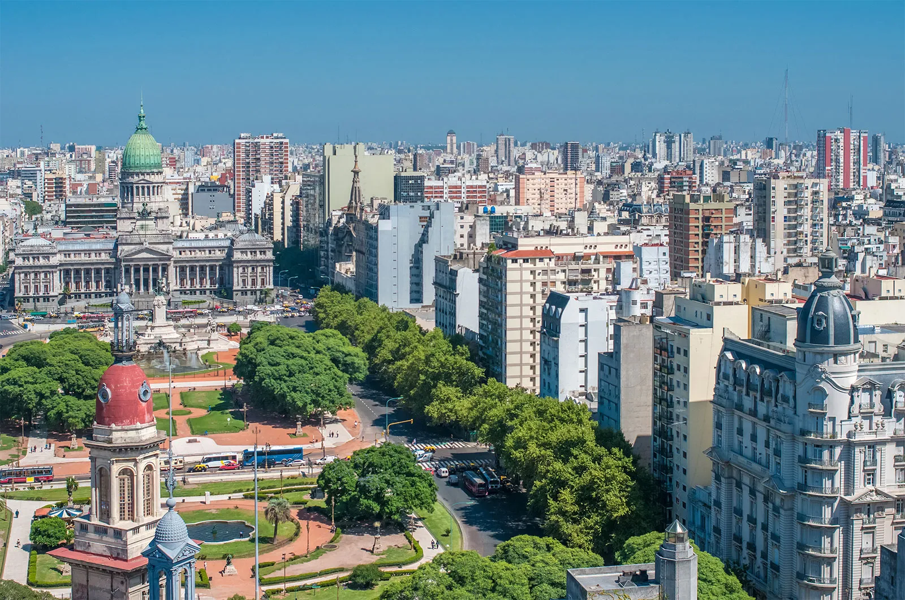
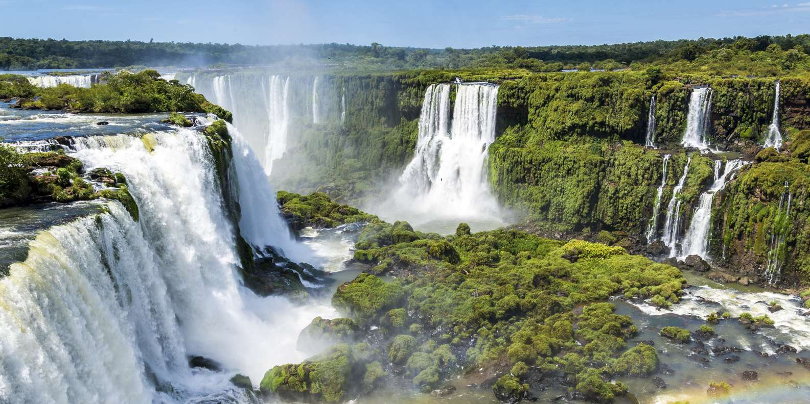
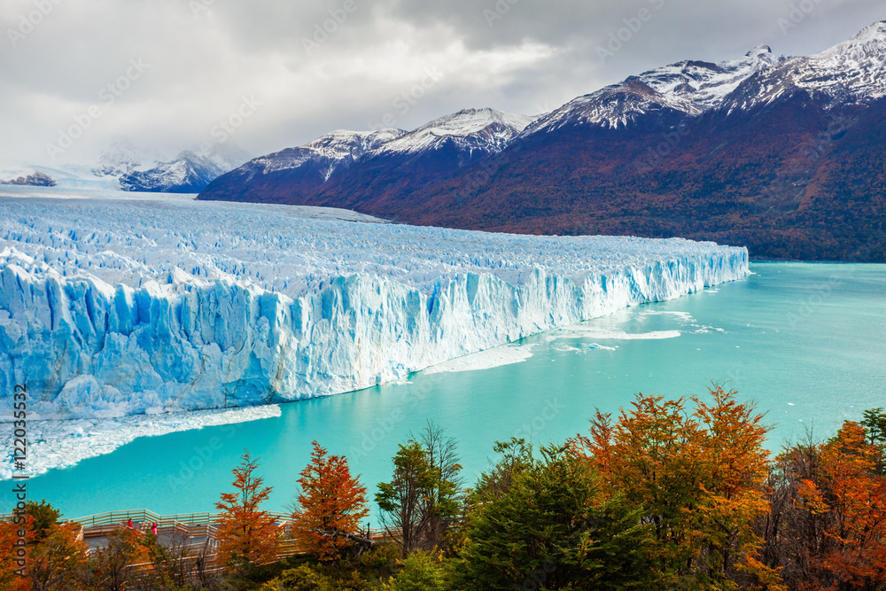
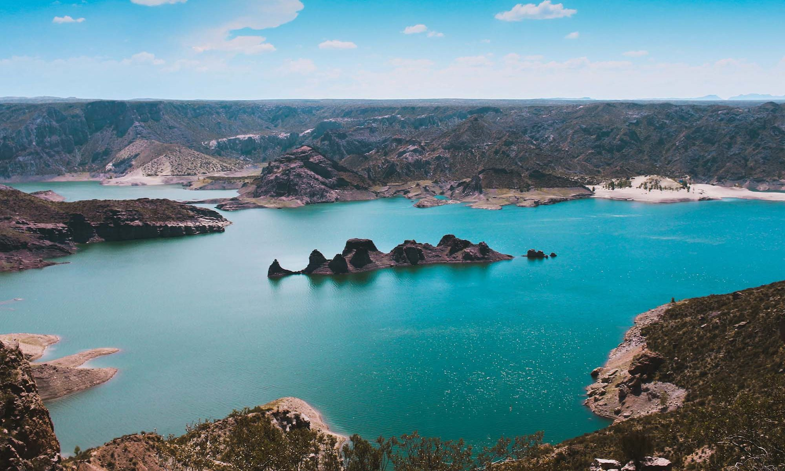
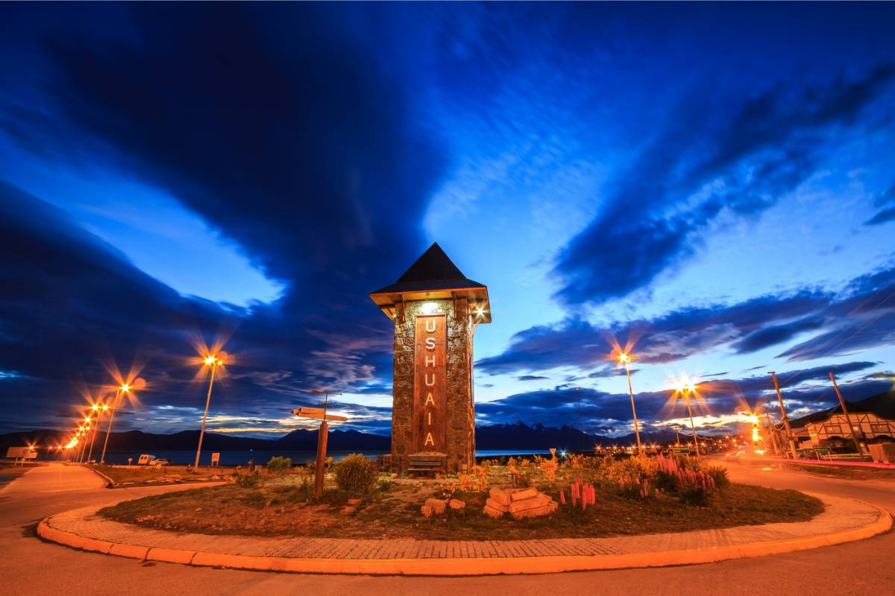

Argentína egyedi látványosságai – miért olyan különleges?

Buenos Aires
Ahol az utcák táncolnak
A La Boca negyedben a házak olyan színesek, mintha Picasso festette volna őket – és este minden sarkon élő tangó zenél! Próbáld ki a milongákat, ahol helyiek tanítanak pár lépést.

Iguazú
A víz, ami ordít
A Garganta del Diablo (Ördög torka) olyan hangos, hogy 24 km-ről is hallani! A helyi legenda szerint a vízesés egy szívből törő szerelmes istennő könnyeiből született.

Perito Moreno
A gleccser, ami harcol
Ez a gleccser NÖVEKSZIK (napi 2 métert!), miközben a többi a Földön zsugorodik. Ha szerencséd van, hallhatod, ahogy a 60 méteres jégfalak robbanásszerűen leszakadnak!

Mendoza
Ahol a bor forr az erekben
Itt a malbec bort úgy isszák, mint mások a vizet! Pro tip: a helyiek asado (grillhús) mellé mindig empanadát esznek – próbáld ki a humita (kukoricás) változatot!

Ushuaia
Börtönből világvéggé
Ezt a várost eredetileg börtönként építették, ma pedig a legdélebbi sörfőzde (Cervecería Beagle) híres a centolla (óriásrák) leveséről!